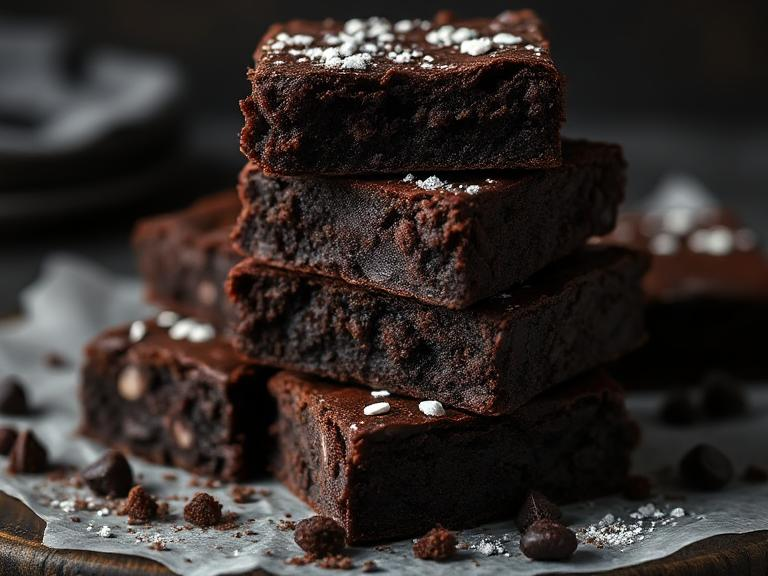

Chocolate Fudge Brownies!
With their soft texture and deep chocolate flavor, these brownies are the perfect treat for making any gathering a little more special.
Ingredients:
- Preheat your oven to 180°C (350°F).
- Line an 8-inch square baking pan with parchment paper (so your brownies don’t stick and betray you).
- In a double boiler (or heatproof bowl over simmering water), melt the butter and chocolate.
- Remove from heat, and whisk in sugar.
- Whisk in eggs, one at a time, until fully combined.
- Mix in cocoa powder and salt. Stir like it's a workout.
- Fold in flour until just combined. No overmixing!
- Pour the batter into your prepared pan and spread it evenly.
- Bake for 25-30 minutes, or until a toothpick inserted in the center comes out with moist crumbs (not wet batter!).
- Let them cool in the pan for about 15 minutes. Then cut them into squares and enjoy your homemade chocolate masterpiece.
Instructions:
Please Note: I hope you enjoy these brownies, and once you’ve tasted them, you won’t be able to stop making them.